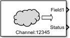

Read data stored in ThingSpeak channel
Simulink Support Package for RaspberryPi Hardware

The ThingSpeak Read block reads data from the ThingSpeak™ channel on ThingSpeak.com website.
ThingSpeak is an open Internet of Things (IoT) platform with MATLAB® analytics that allows you to collect and store sensor data in the cloud and develop IoT applications. The ThingSpeak IoT platform provides applications that allow you to analyze and visualize your data in MATLAB and then act on the data.